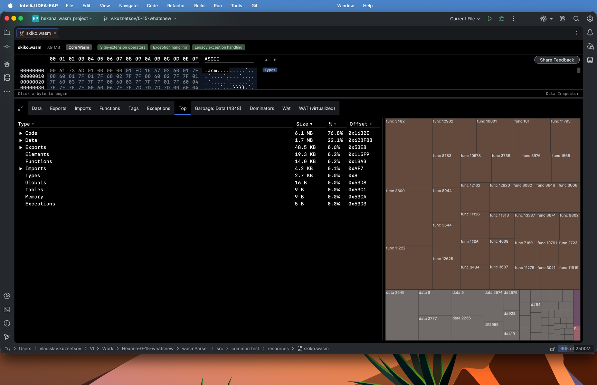
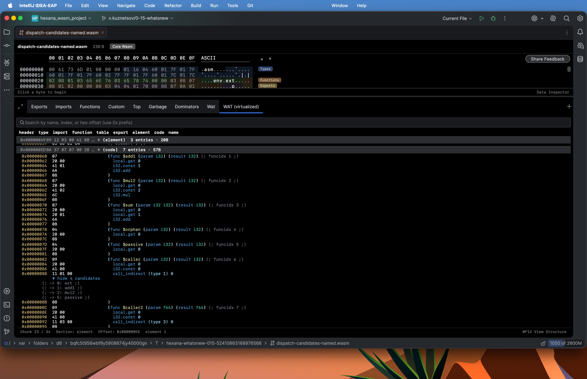
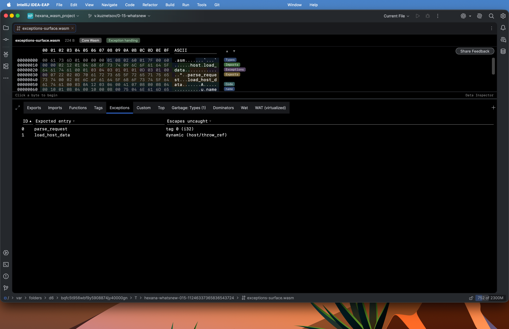

Hexana update
What's New in Hexana 0.15
Hexana 0.15 focuses on Size analysis, Dynamic dispatch, and Exception handling while refining binary inspection inside JetBrains IDEs.
Size analysis
See where every byte goes
The Top tab pairs a sortable size breakdown with a treemap, making the largest sections and functions immediately visible across WASM and native binaries.
- Size diagram ("Top" tab) for wasm and native binaries that shows largest by size entities.

Dynamic dispatch
Expand indirect-call candidates inline
WAT call_indirect rows now reveal their statically known dispatch candidates inline, with click-through navigation to each matching function.
call_indirectdispatch candidates in the WAT view. Everycall_indirect/return_call_indirectrow now shows its statically known dispatch candidates.- Dispatch tab in the WASM module diff, next to Size Impact and Entities: per canonical signature, which dispatch candidates entered or left the function table between the two builds. Cross-build candidate identity uses the same content-hash function matcher as the Entities tab (names are not trusted: wasm-bindgen closure shims rename every build).
- The call graph now models indirect calls through one hub node per canonical signature (
<indirect: (i32, i32) -> i32>) instead of the single<indirect calls>node introduced in 0.14. Each indirect-calling function connects to the hubs of the signatures it actually dispatches through, and each hub fans out only to the table functions matching that signature.

Exception handling
Understand what can escape to the host
The Exceptions tab distinguishes precise statically propagated tags from dynamic host-import and throw_ref categories, without claiming exhaustive runtime prediction.
- Exception-handling visibility for the exception-handling proposal (
try_table/throw/throw_ref). Exception instructions now render with their real WAT text (throw 0,try_table (catch 0 1) (catch_all 2),throw_ref) plus a trailing comment decoding each index.

Also in 0.15
- Go from WASM rows back to source Go to Source connects Functions, Exports, and WAT instructions to DWARF or source-map locations, including sourceMappingURL discovery.
- Move through binary structure with less friction Clickable section labels, Save As for nested content, restored nested-table sorting, a repaired Dominators tree, and smoother tab switching keep inspection workflows reliable.